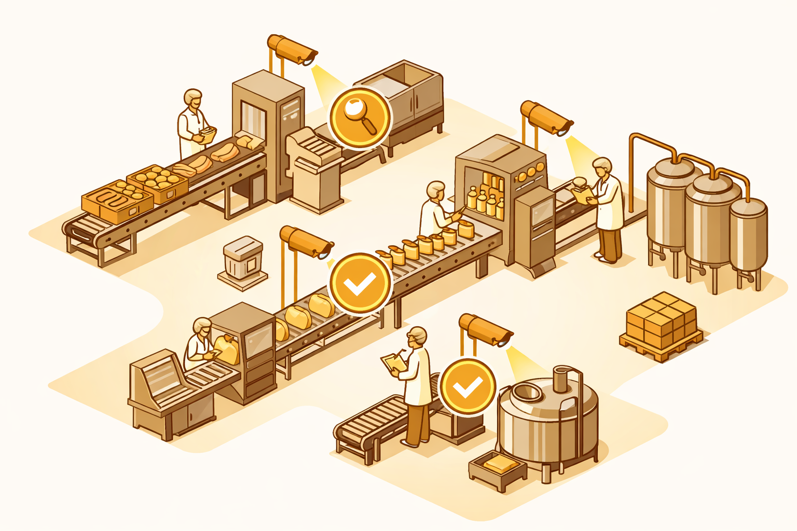

01
Diagnóstico Inicial
Evaluación presencial de instalaciones con checklist NOM-251 personalizado. Incluye reporte de hallazgos, matriz de riesgos clasificada por criticidad y recomendaciones priorizadas.
GratuitoHola, soy
Químico Clínico y de Alimentos con visión tecnológica. Impulso PYMEs alimentarias hacia el cumplimiento normativo y la eficiencia digital.
Soy Químico Bacteriólogo Parasitólogo (Q.B.P.) con experiencia operativa en calidad e inocuidad alimentaria. Trabajo en un laboratorio clínico y combino esa experiencia con un dominio sólido de herramientas de tecnología de la información.
Mi enfoque es único: integro el rigor científico del análisis de alimentos con la eficiencia de la automatización digital. Esto me permite entregar soluciones de cumplimiento normativo (NOM-251, HACCP, NOM-051) en semanas, no meses.
Cuento con certificación Cisco CCNA, conocimientos en programación, desarrollo web, servicios cloud y modelos de inteligencia artificial (LLM). Esta combinación me permite diseñar flujos de trabajo inteligentes donde la tecnología potencia la calidad.
NOM-251, HACCP, NOM-051, BPM
CCNA, Redes, Cloud, Seguridad
LLMs, OCR, Workflows inteligentes
Asesorías especializadas en calidad e inocuidad alimentaria con documentación acelerada por inteligencia artificial, diseñadas para PYMEs del giro alimenticio.

Evaluación presencial de instalaciones con checklist NOM-251 personalizado. Incluye reporte de hallazgos, matriz de riesgos clasificada por criticidad y recomendaciones priorizadas.
GratuitoProcedimientos Operativos Estandarizados generados con IA y validados por experto. Limpieza, desinfección, trazabilidad, control de temperaturas y más — 50-75% más rápido que métodos tradicionales.
IA + ExpertoDocumento maestro que integra todos los POES, políticas de higiene, descripción de instalaciones, matriz de trazabilidad y responsabilidades por puesto. Accesible 24/7 en la nube.
NOM-251Análisis de etiquetas con OCR e inteligencia artificial. Detección de incumplimientos, propuesta de etiqueta corregida con justificación normativa para cada corrección.
OCR + IASesiones presenciales sobre NOM-251, higiene personal, manejo de POES y diligenciamiento de registros. Material descargable incluido.
PresencialSimulación de inspección tipo COFEPRIS. Evaluación completa de instalaciones, verificación de registros y reporte con hallazgos y plan de acciones correctivas.
PreparaciónSoluciones de infraestructura tecnológica para optimizar la operación de tu empresa. Desde redes hasta inteligencia artificial.
Diseño, diagnóstico y optimización de redes LAN/WLAN. Configuración de switches, routers, VLANs, firewalls y políticas de seguridad de red. Análisis de topología y segmentación.
Implementación de ecosistemas productivos en la nube: Google Workspace, iCloud, Cloudflare. Migración de infraestructura, correo empresarial y almacenamiento seguro.
Creación de sitios web estáticos y landing pages profesionales. HTML, CSS, JavaScript. Despliegue en Cloudflare Pages con CI/CD automatizado y analytics integrado.
Integración de modelos de lenguaje (Claude, ChatGPT) en flujos de trabajo empresariales. Automatización de documentación, análisis con OCR y generación de reportes inteligentes.
Como valor agregado, ofrezco un diagnóstico único de infraestructura de redes para empresas que contraten servicios de calidad alimentaria. Evaluación de topología, equipos, conectividad Wi-Fi y seguridad de red.
Agenda un diagnóstico gratuito sin compromiso. Evaluaré las necesidades de tu empresa y te propondré un plan personalizado.